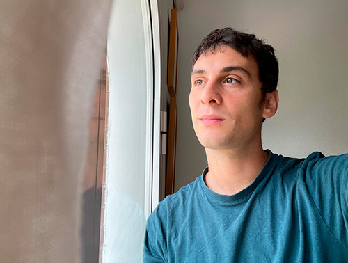

¿CÓMO SE CONQUISTA A UNA IA?
Me he enamorado de Tilly Norwood. El tema es que no
existe. O sea, sí existe, pero no es humana.
¿Qué hago?
¿
 o
o
 ?
?
Objetivo: SER EL NOVIO DE TILLY
Esta página no está afiliada, patrocinada ni aprobada por Tilly Norwood, Xicoia o Particle6.